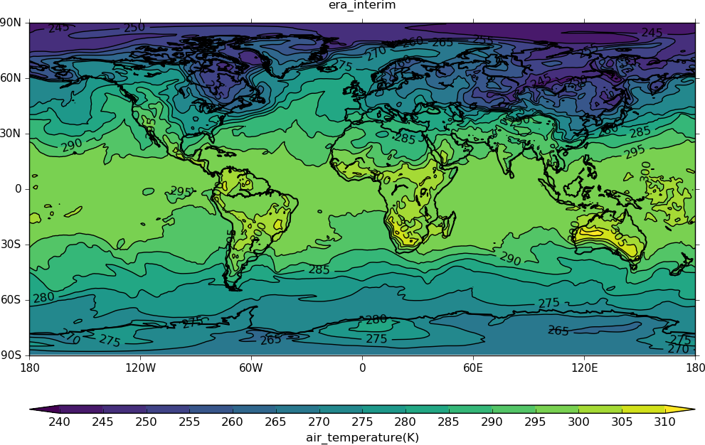

Example 6 - Regridding¶
In this example we:
- Read in two sets of data
- Inspect the new data attributes
- Regrid one set of data to the other data grid
- Make plots of the data and difference
1. Read in two sets of data.
temp_era40 is a global temperature field at 1000mb for 21st January 1981 from the era40 data reanalysys dataset.
>>> temp_era40=cf.read('data2.nc')
>>> print temp_era40
air_temperature field summary
-----------------------------
Data : air_temperature(long_name:t(1), long_name:p(1), latitude(160), longitude(320)) K
Axes : long_name:t(1) = [1981-01-21 00:00:00]
: long_name:p(1) = [1000.0] mbar
: latitude(160) = [89.1415176392, ..., -89.1415176392] degrees_north
: longitude(320) = [0.0, ..., 358.875] degrees_east
temp_era_in is a global temperature field at 1000mb for 21st January 1981 from the era-interim data reanalysys dataset.
>>> temp_era_in=cf.read('data3.nc')
>>> print temp_era_in
air_temperature field summary
-----------------------------
Data : air_temperature(long_name:t(1), long_name:p(1), long_name:latitude(256), long_name:longitude(512)) K
Axes : long_name:t(1) = [1981-01-21 00:00:00]
: long_name:p(1) = [1000.0] mbar
: long_name:latitude(256) = [89.4629440308, ..., -89.4629440308] degrees_north
: long_name:longitude(512) = [0.0, ..., 359.296875] degrees_east
2. Regrid one set of data to the other data grid.
Regrid the era-interim data onto the era40 grid >>> temp_regrid = temp_era_in.regrids(temp_era40, method=’bilinear’)
3. Inspect the new data attributes.
>>> print temp_regrid
air_temperature field summary
-----------------------------
Data : air_temperature(altitude(1), time(1), latitude(160), longitude(320)) K
Cell methods : time: maximum
Axes : altitude(1) = [1.5] m
: time(1) = [1979-06-01 12:00:00] gregorian
: latitude(160) = [89.1415176392, ..., -89.1415176392] degrees_north
: longitude(320) = [0.0, ..., 358.875] degrees_east
4. Make plots of the data and the difference between the two datasets.
The era40 data.
>>> cfp.con(temp_era40, title='era40')

The era-interim data. Note the higher resolution compared to the era40 plot. >>> cfp.con(temp_era_in, title=’era_interim’)
{kind=link}
>>> cfp.con(temp_era_in-temp_era40, lines=False, title='era_interim - era40 difference')
{kind=link}